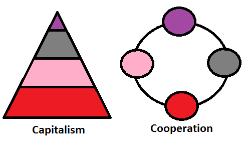

Komplexný hospodársko-spoločenský systém, v ktorom prevláda spoločenské vlastníctvo výrobných prostriedkov a uplatňujú sa demokratické princípy na pracovisku.
„Socializmus zdola“
Základné črty Ekonomickej Demokracie
Zamestnanecke samosprávy
Činnosť týchto podnikov demokraticky kontrolujú zamestnanci. Rovnako sa podieľajú aj na rozdeľovaní hospodárskeho výsledku.
Volia si vlastné vedenie so zachovaním princípu jeden človek člen samosprávy rovná sa jeden hlas. Čím viac podnik prosperuje, tým viac si môžu členovia zamestnaneckej samosprávy rozdeliť.
Trh
Trh ako zostávajúci mechanizmus pre rozdeľovanie spotrebných tovarov a základných prostriedkov spoločnosti.Pôjde o „férový obchod“ založený na tarifách
.. v nijakom prípade nie o voľný obchod, najmä nie v prípadoch, keď sú výrazné rozdiely medzi mzdami a environmentálnou reguláciou v jednotlivých obchodujúcich štátoch. Ide o regulovanie trhov na princípe vzájomnej výhodnosti a spolupráce. Ale napriek tomu ceny reguluje iba ponuka a dopyt po spotrebných tovaroch a výrobných – základných prostriedkoch. Finančné trhy založené na investovaní súkromných financií a na špekulácii zaniknú.
Spoločenské investície
Investičné prostriedky pochádzajú z dani zo základných prostriedkov. Vytvára sa z toho národný investičný fond, ktorý je základom pre nové investovanie.
Pod základnými prostriedkami rozumieme výrobné prostriedky na ktorých sa vytvára produkcia určená na trh. Tento investičný fond je verejná inštitúcia, ktorú riadi vláda poprípade regionálne samosprávy. V ekonomickej demokracii neexistujú súkromné burzy alebo súkromné banky. Neje možné predávať podiely v štátnych firmách alebo družstvách súkromným osobám. Úlohou investičných fondov je grantovým spôsobom rozdeľovať investičné prostriedky na základe spoločensky stanovených kritérií rozvoja a efektívneho použitia prostriedkov, teda do tých oblastí hospodárstva , ktoré chce daný región, spoločenstvo, štát rozvíjať a dominantnou úlohou je rozvíjať zamestnanosť a likvidovať nezamestnanosť.
Ekonomická demokracia je model, kde prevláda kolektívne vlastníctvo výrobných prostriedkov oproti súkromnému. Prevažná časť výrobných prostriedkov je vlastnená kolektíve (pracovníkmi v družstvách) alebo spoločensky (štátom ). Súkromné vlastníctvo je ponechané v rozsahu malého alebo stredného podnikania, ale nie je to strategická časť hospodárstva
Vedenie podniku v ekonomickej demokracii si volia zamestnanci, ktorí v ňom pracujú. Hlasovanie na členskej schôdzi prebieha vždy podľa zásady 1 člen samosprávy = 1 rozhodovací hlas
Výhody ekonomickej demokracie oproti kapitalizmu
Hlavné výhody spočívajú v spravodlivejšom rozdeľovaní spoločenskej nadvýroby, ktorá v kapitalistickom systéme vo väčšej miere končí v súkromných rukách úzkej skupiny jednotlivcov – súkromných investorov. Kapitalizmus vďaka voľnému trhu a podpore slobodného podnikania dokáže iste vytvárať vysokú domácu produkciu, ale problém je v tom, že sa táto nadvýroba neprerozdelí spravodlivo v spoločnosti, ale prevažnú časť „zhltne“ malá skupina na vrchole vlastníckej štruktúry.
Ďalším výrazným problémom kapitalizmu je bezbrehá podpora voľného trhu a s ním spojená konkurenčná súťaž. Pri tejto súťaži vždy vyhráva silnejší a vo väčšine prípadov na úkor slabších. Globálne trhy sa monopolizovali, teda vytvorili prostredie trhu, ktoré už nie je v žiadnom prípade „slobodným trhom“. Naopak v ekonomickej demokracii sa presadzuje viac spolupráca.
Záver: Všetko ostatné je rovnaké, ale firmy so zamestnaneckou samosprávou sú efektívnejšie, ako ich kapitalistické náprotivky.